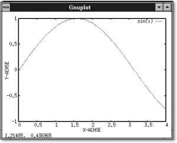
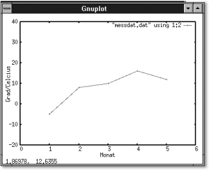
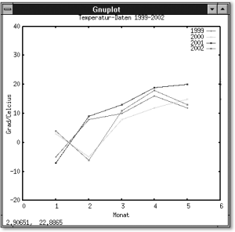
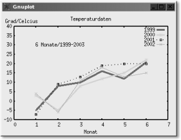
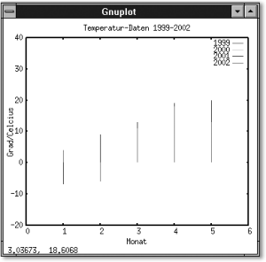
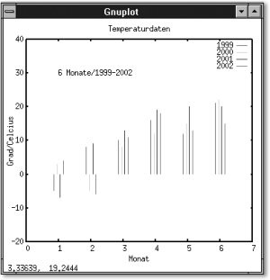
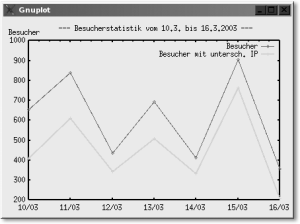
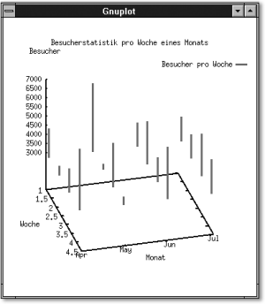

|
|
|
Hier wurde ein einfacher 2-D-Graph mit x/y-Koordinaten geplottet. Im Beispiel wurde der Bezugsrahmen der x/y-Koordinaten nicht angegeben. In diesem Fall macht gnuplot dies automatisch. Die Standardwerte für die x-Achse lauten hier –10 bis +10 und die y-Achse wird automatisch ermittelt. Wollen Sie bspw. die x-Achse auf den Wert 0 bis 4 setzen, so können Sie dies folgendermaßen realisieren (siehe Abbildung 5.14): gnuplot> plot [0:4] sin(x)
 5.9.4 Variablen und Parameter für gnuplot
|
|||||||||||||||||||||||||||||||||||||||||||||||||||||||||||||||||||||||||||||||||||||||||||||||||||||||||||||||||||||||||||||||||||||||||||||||||||||||||||||||||||||||||||||||||||||||||||||||||||||||||||||||||||||||||||||||||||||||||||||||||||||||||||||||||||||||||||||||||||||||||||||||||||||||||||||||||||
|
Hinweis Sie kommen mit einem einfachen (ENTER) wieder aus dem Hilfe-System-Prompt heraus (oder auch ins nächsthöhere Hilfemenü hoch). |
Sie finden eine Menge Variablen wieder, die Sie jederzeit Ihren Bedürfnissen anpassen können. Uns interessieren erst einmal die Variablen xlabel und ylabel für die Beschriftung sowie xrange und yrange für den Bezugsrahmen der einzelnen Achsen. All diese Variablen können Sie mit dem Kommando set anpassen:
set variable wert
Um auf das erste Plot-Beispiel zurückzukommen, können Sie die einzelnen (eben genannten) Werte wie folgt verändern:
gnuplot> set xlabel "X-ACHSE" gnuplot> set ylabel "Y-ACHSE" gnuplot> set xrange [0:4] gnuplot> set yrange [-1:1] gnuplot> plot sin(x)
|
 Abbildung 5.15 Label und Bezugsrahmen der x/y-Achse verwendet |
Im Beispiel erfolgte die Ausgabe von gnuplot bisher immer auf ein separat sich öffnendes Fenster (meistens ist dabei terminal auf »x11« eingestellt). Dieses Ziel können Sie selbstverständlich auch beispielsweise in eine Postscript-Datei oder einen (Postscript-)Drucker umleiten. gnuplot hat eine Menge Treiber an Bord, die plattformunabhängig sind. Die Ausgabe geben Sie mit set terminal foo an, wodurch die Ausgabe ins foo-Format umgewandelt wird. Welche »Terminals« Ihr gnuplot alle zur Anzeige bzw. Ausgabe unterstützt, können Sie mit einem einfachen set terminal abfragen:
gnuplot> set terminal ... kyo Kyocera Laser Printer with Courier font latex LaTeX picture environment mf Metafont plotting standard mif Frame maker MIF 3.00 format mp MetaPost plotting standard nec_cp6 NEC printer CP6, Epson LQ-800 [monocrome color draft] okidata OKIDATA 320/321 Standard pbm Portable bitmap [small medium large] pcl5 HP Designjet 750C, HP Laserjet III/IV, etc. png Portable Network Graphics [small medium large] postscript PostScript graphics language prescribe Prescribe – for the Kyocera Laser Printer pslatex LaTeX picture environment with PostScript \specials pstex plain TeX with PostScript \specials pstricks LaTeX picture environment with PSTricks macros ...
Wollen Sie, dass anstatt in einem x11-Fenster die Ausgabe im Postscript-Format erfolgen soll, müssen Sie nur den Terminaltyp mit
gnuplot> set terminal postscript Terminal type set to 'postscript'
ändern. Die häufigsten Endgeräte (Terminals) sind hierbei die Formate: »postscript«, »latex« und »windows«, wobei »windows« wiederum für die Ausgabe auf dem Bildschirm (ähnlich wie »x11«) steht. Beachten Sie allerdings, dass wenn Sie ein anderes Format angeben (z. B. »postscript«) hierbei ein Ausgabeziel definiert sein muss, da sonst der komplette Datenfluss auf Ihren Bildschirm erfolgt. Die Ausgabe verändern Sie ebenfalls mit dem Kommando set:
set output "zieldatei.endung"
Um etwa aus der einfachen Sinuskurve vom Beispiel oben eine echte Postscript-Datei zu erzeugen, gehen Sie wie folgt vor:
gnuplot> set terminal postscript Terminal type set to 'postscript' gnuplot> set output "testplot.ps" gnuplot> plot sin(x) gnuplot>
Ein Blick in das Arbeitsverzeichnis sollte nun die Postscript-Datei testplot.ps zu Tage fördern. Selbstverständlich können Sie hier – sofern vorhanden – auch andere Formate zur Ausgabe verwenden. So z. B. für das Internet eine PNG-Datei:
gnuplot> set terminal png Terminal type set to 'png' Options are ' small color' gnuplot> set output "testplot.png" gnuplot> plot sin(x)
Wenn Sie set output "PRN" verwenden, werden die Daten (vorausgesetzt, es wurden zuvor mit terminal die richtigen Treiber angegeben) an den Drucker geschickt.
|
Tipp Das Drucken funktioniert auch via Rechts-Klick des Mausbuttons aus einem x11-Fenster heraus. Tipp Wollen Sie im aktuellen Arbeitsverzeichnis schnell nachsehen, ob hier tatsächlich eine entsprechende Datei erzeugt wurde, können Sie auch sämtliche Shell-Befehle in gnuplot verwenden. Sie müssen nur vor dem entsprechenden Befehl ein ! setzen, eine Leerzeile lassen und den Befehl anfügen. So listet ! ls -l Ihnen z. B. in gnuplot das aktuelle Verzeichnis auf. |
Variablen können Sie mit gnuplot genauso definieren, wie Sie dies schon von der Shell-Programmierung her kennen:
variable=wert
Wenn Sie den Wert einer Variablen kennen oder Berechnungen mit gnuplot ausgeben lassen wollen, kann hierfür das print-Kommando verwendet werden.
gnuplot> var=2 gnuplot> print var 2 gnuplot> var_a=1+var*sqrt(2) gnuplot> print var_a 3.82842712474619
Solche Variablen können auch als Wert für ein Plot-Kommando genutzt werden. Im folgenden Beispiel wird eine Variable Pi verwendet, um den Bezugsrahmen der x-Koordinate zu »berechnen«.
gnuplot> Pi=3.1415 gnuplot> set xrange [-2*Pi:2*Pi] gnuplot> a=0.6 gnuplot> plot a*sin(x)
Hier wird ein Graph gezeichnet aus a*sin(x) von –2*Pi bis 2*Pi für den gilt a=0.5.
Das Ganze lässt sich aber auch mit einer eigenen Funktion definieren:
gnuplot> func(x)=var*sin(x)
Diese Funktion können Sie nun mit dem Namen plot func(x) aufrufen bzw. plotten lassen. Da diese Funktion auch eine User-definierte Variable var enthält, erwartet diese auch eine solche Variable von Ihnen:
gnuplot> var=0.5 gnuplot> plot func(x) gnuplot> var=0.6 gnuplot> plot func(x) gnuplot> var=0.9 gnuplot> plot func(x)
Hierbei wurde der Parameter var ständig verändert, um einige Test-Plots mit veränderten Wert durchzuführen.
Im folgenden Beispiel soll eine Datei namens messdat.dat mit Temperaturwerten der ersten sechs Monate der letzten vier Jahre mit gnuplot ausgelesen und grafisch ausgegeben werden.
gnuplot> ! cat messdat.dat 1 –5 3 –7 4 2 8 –5 9 –6 3 10 8 13 11 4 16 12 19 18 5 12 15 20 13 6 21 22 20 15
Jede Zeile soll für einen Monat stehen. Die erste Zeile z. B. steht für den Januar und beinhaltet Daten von vier Jahren (wir nehmen einfach mal 1999–2002). Um jetzt diese Messdaten als eine Grafik ausgeben zu lassen, können Sie wie folgt vorgehen:
gnuplot> set xrange [0:6] gnuplot> set yrange [-20:40] gnuplot> set xlabel "Monat" gnuplot> set ylabel "Grad/Celcius"
Bis hierhin nichts Neues. Jetzt müssen Sie den Zeichenstil angeben, den Sie verwenden wollen (darauf wird noch eingegangen):
gnuplot> set data style lp
Jetzt erst kommt der Plot-Befehl ins Spiel. Das Prinzip ist verhältnismäßig einfach, da gnuplot bestens – wie bei einer Tabellenkalkulation – mit dem spaltenorientierten Aufbau von Messdaten zurechtkommt. Die Syntax:
using Xachse:Yachse
Damit geben Sie an, dass Sie ab der Zeile Xachse sämtliche Daten aus der Yachse–Spalte erhalten wollen. Beispielsweise:
# alle Daten ab der ersten Zeile aus der zweiten Spalte using 1:2 # alle Daten ab der ersten Zeile aus der vierten Spalte using 1:4
Damit using auch weiß, von wo die Daten kommen, müssen Sie ihm diese mit plot zuschieben:
plot datei using Xachse:Yachse
Somit könnten Sie aus unserer Messdatei messdat.dat alle Daten ab der ersten Zeile in der zweiten Spalte folgendermaßen ausgeben lassen:
gnuplot> plot "messdat.dat" using 1:2
|
 Abbildung 5.16 Interpretation von Daten aus einer Datei (1) |
Die Art der Linien, die hier ausgegeben werden, haben Sie mit set data style lp festgelegt. Wie es sich für ein echtes Messprotokoll gehört, beschriftet man die Linien auch entsprechend – was mit einem einfachen t für title und einer Zeichenkette dahinter erledigt werden kann:
gnuplot> plot "messdat.dat" using 1:2 t "1999"
Wollen Sie dem Messprotokoll auch noch einen Titel verpassen, so können Sie diesen mit
set title "ein Titel"
angeben. Nochmals das vollständige Beispiel, welches die Datei messdat.dat auswertet und plottet:
gnuplot> set xrange [0:6] gnuplot> set yrange [-20:40] gnuplot> set xlabel "Monat" gnuplot> set ylabel "Grad/Celcius" gnuplot> set data style lp gnuplot> set title "Temperatur-Daten 1999–2002" gnuplot> plot "messdat.dat" using 1:2 t "1999" ,\ > "messdat.dat" using 1:3 t "2000" ,\ > "messdat.dat" using 1:4 t "2001" ,\ > "messdat.dat" using 1:5 t "2002"
|
 Abbildung 5.17 Interpretation von Daten aus einer Datei (2) |
Im Beispiel sehen Sie außerdem, dass mehrere Plot-Anweisungen mit einem Komma und Zeilenumbrüche mit einem Backslash realisiert werden.
Das Beispiel zum Auswerten der Messdaten hält sich hinsichtlich des Aufwands in Grenzen, aber sofern man hier das ein oder andere ändern bzw. die Ausgabe nochmals ausgeben will, ist der plot-Befehl schon ein wenig lang. Zwar gibt es auch hier eine Kommando-History, doch es geht mit dem Befehl replot noch ein wenig schneller.
gnuplot> replot
Damit wird der zuvor vorgenommene plot nochmals geplottet. replot wird gewöhnlich verwendet, wenn Sie einen plot auf ein Fenster vorgenommen haben und diesen jetzt auch in einer Ausgabedatei speichern wollen. Im folgenden Beispiel soll der vorherige Plot in einer Postscript-Datei wieder zu sehen sein. Nichts einfacher als das:
gnuplot> set terminal postscript Terminal type set to 'postscript' gnuplot> set output "messdat.ps" gnuplot> replot gnuplot> ! ls *.ps messdat.ps
Bevor Sie jetzt gnuplot beenden, können Sie auch den kompletten Plot (genauer: alle Befehle, Funktionen und Variablen) in einer Datei speichern.
gnuplot> save "messdat.plt" gnuplot> quit
Starten Sie jetzt beim nächsten Mal gnuplot, können Sie mithilfe von load Ihre gespeicherten Plot-Daten wieder auf dem Bildschirm oder wohin Sie es angeben plotten lassen.
gnuplot> load "messdat.plt"
|
Tipp: Wenn Sie wissen wollen, welche Linie welche Farbe bekommt und wie sonst alles standardmäßig auf dem Terminal aussieht, genügt ein einfacher test-Befehl. Wenn Sie test in gnuplot eintippen, bekommen Sie die aktuelle Terminal-Einstellung von gnuplot in einem Fenster zurück. |
Hierbei unterscheidet man zwischen zwei Möglichkeiten. Entweder es existiert bereits eine Batch-Datei, welche mit save "file.dat" gespeichert wurde und die es gilt aufzurufen, oder Sie wollen den ganzen gnuplot-Vorgang aus einem Shellscript heraus starten.
Eine Möglichkeit ist es, die Batch-Datei als Argument von gnuplot anzugeben:
you@host > gnuplot messdat.plt
gnuplot führt dann die angegebene Datei bis zur letzten Zeile in der Kommandozeile aus. Allerdings beendet sich gnuplot nach dem Lesen der letzten Zeile gleich wieder. Hier können Sie gegensteuern, indem Sie in der letzten Zeile der entsprechenden Batch-Datei (hier bspw. messdat.plt) pause –1 einfügen. Die Ausgabe hält dann so lange an, bis Sie eine Taste drücken.
Allerdings ist diese Methode unnötig, weil gnuplot Ihnen hier mit der Option –persist Ähnliches anbietet. Die Option –persist wird verwendet, damit das Fenster auch im Script-Betrieb sichtbar bleibt.
you@host > gnuplot -persist messdat.plt
Außerdem können Sie die Ausgabe auch wie ein Shellscript von gnuplot interpretieren lassen. Ein Blick auf die erste Zeile der Batch-Datei bringt Folgendes ans Tageslicht:
you@host > head –1 messdat.plt #!/usr/bin/gnuplot -persist
Also machen Sie die Batch-Datei ausführbar und starten das Script wie ein gewöhnliches:
you@host > chmod u+x messdat.plt you@host > ./messdat.plt
Um gnuplot aus einem Shellscript heraus zu starten, benötigen Sie ebenfalls die Option –persist (es sei denn, Sie schreiben in der letzten Zeile pause –1). Zwei Möglichkeiten stehen Ihnen zur Verfügung: mit echo und einer Pipe oder über ein Here-Dokument. Zuerst die Methode mit echo:
you@host > echo 'plot "messdat.dat" using 1:2 t "1999" with lp'\ > | gnuplot -persist
Wobei Sie hier gleich erkennen können, dass sich die Methode mit echo wohl eher für kurze und schnelle Plots eignet. Mit der Angabe with lp musste noch der Style angegeben werden, da sonst nur Punkte verwendet würden. Wenn Sie noch weitere Angaben vornehmen wollen, etwa den Namen der einzelnen Achsen oder den Bezugsrahmen, ist die Möglichkeit mit echo eher unübersichtlich. Zwar ließe sich dies auch so erreichen:
you@host > var='plot "messdat.dat" using 1:2 t "1999" with lp' you@host > echo $var | gnuplot -persist
doch meiner Meinung nach ist das Here-Dokument die einfachere Lösung. Hier ein Shellscript für die Methode mit dem Here-Dokument:
# Demonstriert einen Plot mit gnuplot und dem Here-Dokument # Name : aplot1 # Datei zum Plotten FILE=messdat.dat echo "Demonstriert einen Plot mit gnuplot" gnuplot -persist <<PLOT set xrange [0:6] set yrange [-20:40] set xlabel "Monat" set ylabel "Grad/Celcius" set data style lp set title "Temperatur-Daten 1999–2002" # Falls Sie eine Postscript-Datei erstellen wollen ... # set terminal postscript # set output "messdat.ps" plot "$FILE" using 1:2 t "1999" ,\ "$FILE" using 1:3 t "2000" ,\ "$FILE" using 1:4 t "2001" ,\ "$FILE" using 1:5 t "2002" quit PLOT echo "Done ..."
Wollen Sie nicht, dass gnuplot bestimmt, welcher Plotstil (Style) verwendet wird, können Sie diesen auch selbst auswählen. Im Beispiel hatten Sie den Stil bisher mit
set data style lp
festgelegt. lp ist eine Abkürzung für linepoints. Sie können aber den Stil auch angeben, indem Sie an einen plot-Befehl das Schlüsselwort with gefolgt vom Stil Ihrer Wahl anhängen.
plot "datei" using 1:2 with steps # bspw. you@host > echo 'plot "messdat.dat" using 1:2 \ > t "1999" with steps' | gnuplot -persist
Hier geben Sie z. B. als Stil eine Art Treppenstufe an. Die einzelnen Stile hier genauer zu beschreiben, geht wohl ein wenig zu weit und ist eigentlich nicht nötig. Am besten probieren Sie die einzelnen Styles selbst aus. Welche möglich sind, können Sie mit einem Aufruf von
gnuplot> set data style
in Erfahrung bringen. Das folgende Script demonstriert Ihnen einige dieser Styles, wobei gleich ins Auge sticht, welche Stile für diese Statistik brauchbar sind und welche nicht.
# Demonstriert einen Plot mit gnuplot und dem Here-Dokument # Name : aplotstyles1 # Datei zum Plotten FILE=messdat.dat # Verschiedene Styles zum Testen STYLES="lines points linespoints dots impulses \ steps fsteps histeps boxes" for var in $STYLES do gnuplot -persist <<PLOT set xrange [0:6] set yrange [-20:40] set xlabel "Monat" set ylabel "Grad/Celcius" set data style $var set title "Temperatur-Daten 1999–2002" # Falls Sie eine Postscript-Datei erstellen wollen ... # set terminal postscript # set output "messdat.ps" plot "$FILE" using 1:2 t "1999" ,\ "$FILE" using 1:3 t "2000" ,\ "$FILE" using 1:4 t "2001" ,\ "$FILE" using 1:5 t "2002" quit PLOT done
Andere Styles wie
xerrorbars xyerrorbars boxerrorbars yerrorbars boxxyerrorbars vector financebars candlesticks
wiederum benötigen zum Plotten mehr Spalten als Informationen. Näheres entnehmen Sie hierzu bitte den Hilfsseiten von gnuplot.
Neben Titel, Legenden und der x/y-Achse, welche Sie bereits verwendet und beschriftet haben, können Sie auch einen Label an einer beliebigen Position setzen.
set label "Zeichenkette" at X-Achse,Y-Achse
Wichtig in diesem Zusammenhang ist natürlich, dass sich die Angaben der Achsen innerhalb von xrange und yrange befinden.
Zusammenfassend finden Sie die häufig verwendeten Beschriftungen in der folgenden Tabelle 5.11:
| Variable | Bedeutung |
| xlabel | Beschriftung der x-Achse |
| ylabel | Beschriftung der y-Achse |
| label | Beschriftung an einer gewünschten x/y-Position innerhalb von xrange und yrange |
| title | In Verbindung mit set title "abcd" wird der Text als Überschrift verwendet oder innerhalb eines Plot-Befehls hinter der Zeile und Spalte als Legende. Kann auch mit einem einfachen t abgekürzt werden. |
Ein Anwendungsbeispiel zur Beschriftung in gnuplot:
gnuplot> set xlabel "X-ACHSE" gnuplot> set ylabel "Y-ACHSE" gnuplot> set label "Ich bin ein LABEL" at 2,20 gnuplot> set title "Ich bin der TITEL" gnuplot> plot "messdat.dat" using 1:2 title "LEGENDE" with impuls
Dies sieht dann so aus, wie in Abbildung 5.18 zu sehen.
|
Abbildung 5.18 Beschriftungen in gnuplot |
Wenn es Ihnen nicht gefällt, wie gnuplot standardmäßig die Linien und Punkte auswählt, können Sie diese auch mit dem folgenden Befehl selbst festlegen:
set linestyle [indexnummer] {linetype} {linewidth} {pointtype} \
{pointsize}
Beispielsweise:
set linestyle 1 linetype 3 linewidth 4
Hier definieren Sie einen Linienstil mit dem Index 1. Er soll den linetyp 3 (in meinem Fall eine blaue Linie) und eine Dicke (linewidth) von 3 bekommen. Einen Überblick zu den Linientypen erhalten Sie mit dem Befehl test bei gnuplot:
gnuplot> test
Wollen Sie den Linienstil Nummer 1, den Sie eben festgelegt haben, beim Plotten verwenden, müssen Sie ihn hinter dem Style mit angeben:
plot messdat.dat using 1:2 t "1999" with lp linestyle 1
Tabelle 5.12 gibt einen kurzen Überblick zu den möglichen Werten, mit denen Sie die Ausgabe von Linien und Punkten bestimmen können:
| Wert | Bedeutung |
| linetype (Kurzform lt) | Hier können Sie den Linienstil angeben. Gewöhnlich handelt es sich um die entsprechende Farbe und – falls verwendet – den entsprechenden Punkt. Welcher Linienstil wie aussieht, können Sie sich mit dem Befehl test in gnuplot anzeigen lassen. |
| linewidth (Kurzform lw) | Die Stärke der Line; je höher dieser Wert ist, desto dicker wird der Strich. |
| pointtype (Kurzform pt) | Wie linetype, nur dass Sie hierbei den Stil eines Punktes angeben. Wie die entsprechenden Punkte bei Ihnen aussehen, lässt sich auch hier mit test anzeigen. |
| pointsize (Kurzform ps) | Wie linewidth, nur dass Sie hierbei die Größe des Punktes angeben – je höher der Wert ist, desto größer ist der entsprechende Punktstil (pointtype). |
Hierzu nochmals das Shellscript, welches die Temperaturdaten der ersten sechs Monate in den letzten vier Jahren auswertet – jetzt mit veränderten Linien und Punkten.
# Demonstriert einen Plot mit gnuplot und dem Here-Dokument # Name : aplot2 FILE=messdat.dat gnuplot -persist <<PLOT set linestyle 1 linetype 1 linewidth 4 set linestyle 2 linetype 2 linewidth 3 pointtype 6 pointsize 3 set linestyle 3 linetype 0 linewidth 2 pointsize 2 set linestyle 4 linetype 7 linewidth 1 pointsize 2 set xlabel "Monat" set ylabel "Grad/Celcius" set yrange [-10:40] set xrange [0:7] set label "6 Monate/1999–2003" at 1,30 set title "Temperaturdaten" plot "$FILE" using 1:2 t "1999" with lp linestyle 1 ,\ "$FILE" using 1:3 t "2000" with lp linestyle 2,\ "$FILE" using 1:4 t "2001" with lp linestyle 3,\ "$FILE" using 1:5 t "2002" with lp linestyle 4 PLOT
|
 Abbildung 5.19 Ein Plot mit veränderten Linien und Punkten |
Häufig ist die standardmäßige Einstellung der Ausgabe zu groß und manchmal (eher selten) auch zu klein. Besonders wenn man die entsprechende Ausgabe in eine Postscript-Datei für ein Latex-Dokument vornehmen will, muss man häufig etwas anpassen. Diese Angabe können Sie mittels
set size Xval,Yval
verändern (im Fachjargon »skalieren«).
set size 1.0,1.0
ist dabei der Standardwert und gibt Ihre Ausgabe unverändert zurück. Wollen Sie den Faktor (und somit auch die Ausgabe) verkleinern, müssen Sie den Wert reduzieren:
set size 0.8,0.8
Weitere Werte, die Sie zum Verändern bestimmter Abstände verwenden können, sind (siehe Tabelle 5.13):
| Befehl | Bedeutung |
| set offset links,rechts,oben,unten | Hiermit stellen Sie den Abstand der Daten von den Achsen ein. Als Einheit (Wert für links, rechts, oben und unten) dient die Einheit (siehe xrange und yrange), die Sie für die jeweilige Achse verwenden. |
| set lmargin [wert] | Justiert den Abstand der Grafik vom linken Fensterrand |
| set rmargin [wert] | Justiert den Abstand der Grafik vom rechten Fensterrand |
| set bmargin [wert] | Justiert den Abstand der Grafik vom unteren Fensterrand |
| set tmargin [wert] | Justiert den Abstand der Grafik vom oberen Fensterrand |
Gnuplot berechnet von einer Funktion eine Menge von Stützpunkten und verbindet diese dann durch »Spline« bzw. Linienelemente. Bei 3-D-Plots ist allerdings die Darstellung oft recht grob, weshalb es sich manchmal empfiehlt, die Qualität der Ausgabe mit set sample wert (ein wert von bspw. 1000 ist recht fein) feiner einzustellen. Sie verändern so zwar nicht direkt die Auflösung im eigentlichen Sinne, jedoch können Sie hiermit die Anzahl von Stützpunkten erhöhen, wodurch die Ausgabe automatisch feiner wird (allerdings ggf. auch mehr Rechenzeit beansprucht).
Manchmal benötigen Sie ein Offset für die Achsen, etwa wenn Sie Impulsstriche als Darstellungsform gewählt haben. Beim Beispiel mit den Temperaturdaten würde eine Verwendung von Impulsstrichen als Style so aussehen (siehe Abbildung 5.20).
Die Striche überlagern sich alle in der x-Achse. In diesem Beispiel mag die Verwendung von Impulsstrichen weniger geeignet sein, aber wenn Sie Punkte hierfür verwenden, werden häufig viele Punkte auf einem Fleck platziert. Egal welches Anwendungsgebiet, welcher Stil und welche Achse hiervon nun betroffen ist, auch die Achsen (genauer: das Offset der Achsen) können Sie mit einem einfachen Trick verschieben. Nehmen wir z. B. folgende Angabe, die die eben gezeigte Abbildung demonstriert:
plot "$FILE" using 1:2 t "1999" with impuls,\
"$FILE" using 1:3 t "2000" with impuls,\
"$FILE" using 1:4 t "2001" with impuls,\
"$FILE" using 1:5 t "2002" with impuls
|
 Abbildung 5.20 Verwendung von Impulsstrichen auf der x-Achse |
Hier sind die Werte hinter using von Bedeutung:
using 1:2
Wollen Sie jetzt, dass die Impulsstriche minimal von der linken Seite der eigentlichen Position weg platziert werden, müssen Sie dies umändern in:
using (column(1)-.15):2
Jetzt wird der erste Strich um –0.15 von der eigentlichen Position der x-Achse nach links verschoben. Wollen Sie die Impulsstriche um 0.1 nach rechts verschieben, schreiben Sie dies so:
using (column(1)+.1):2
Auf das vollständige Script angewandt sieht dies folgendermaßen aus:
# Demonstriert einen Plot mit gnuplot und dem Here-Dokument # Name : aplot3 FILE=messdat.dat gnuplot -persist <<PLOT set xlabel "Monat" set ylabel "Grad/Celcius" set yrange [-10:40] set xrange [0:7] set label "6 Monate/1999–2002" at 2,20 set title "Temperaturdaten" plot "$FILE" using (column(1)-.15):2 t "1999" with impuls ,\ "$FILE" using (column(1)-.05):3 t "2000" with impuls ,\ "$FILE" using (column(1)+.05):4 t "2001" with impuls ,\ "$FILE" using (column(1)+.15):5 t "2002" with impuls PLOT
Das Script bei der Ausführung (siehe Abbildung 5.21):
|
 Abbildung 5.21 Mehrere Impulsstriche mit verschobener x-Achse |
Wenn der Zeitverlauf irgendeiner Messung dargestellt werden soll, muss gnuplot die x-Werte als Datum/Stunde/Minute etc. erkennen. Gerade als (angehender) Systemadministrator bzw. Webmaster bekommen Sie es regelmäßig mit Zeitdaten zu tun. Wollen Sie dem Kunden bzw. dem Angestellten zeigen, zu welcher Uhrzeit sich etwas Besonderes ereignet hat, können Sie hierzu ebenfalls auf gnuplot zählen. So zeigen Sie diesen Vorgang anschaulich, statt abschreckend mit einer Kolonne von Zahlen um sich zu werfen. Hier hilft es Ihnen auch wieder weiter, wenn Sie sich mit dem Kommando date auseinander gesetzt haben, denn das Format und die Formatierungszeichen sind dieselben. Folgende Daten sind z. B. vorhanden:
you@host > cat besucher.dat 10.03.05 655 408 11.03.05 838 612 12.03.05 435 345 13.03.05 695 509 14.03.05 412 333 15.03.05 905 765 16.03.05 355 208
Jede dieser Zeilen soll folgende Bedeutung haben:
[Datum] [Besucher] [Besucher mit unterschiedlicher IP-Adresse]
Eine Besucherstatistik einer Webseite also. Um hierbei gnuplot mitzuteilen, dass Sie an Daten mit Zeitwerten interessiert sind, müssen Sie dies mit
set xdata time
angeben. Damit gnuplot auch das Zeitformat kennt, geben Sie ihm die Daten mit set timefmt ' ... ' mit. Die Formatangabe entspricht hierbei der von date. Im Beispiel von besucher.dat also:
set timefmt '%d.%m.%y'
Zum Schluss müssen Sie noch angeben, welche Zeitinformationen als Achsenbeschriftung verwendet werden sollen. Dies wird mit einem einfachen
set format x ' ... '
erreicht. Soll beispielsweise das Format Tag/Monat auf der x-Achse erscheinen, dann schreibt man dies so:
set format x "%d/%m"
Oder das Format Jahr/Monat/Tag:
set format x "%y/%m%/%d"
Alles zusammengefasst: set xdata time definiert die x-Werte als Zeitangaben. set timefmt erklärt gnuplot, wie es die Daten zu interpretieren hat. set format x definiert, welche der Zeitinformationen als Achsenbeschriftung auftauchen soll.
Hier das Shellscript, welches die Besucherdaten auswertet und plottet:
# Demonstriert einen Plot mit gnuplot und dem Here-Dokument # Name : aplot4 FILE=besucher.dat gnuplot -persist <<PLOT set xdata time set timefmt '%d.%m.%y' set format x "%d/%m" set ylabel "Besucher" set title " --- Besucherstatistik vom 10.3. bis 16.3.2003 ---" set data style lp plot "$FILE" using (timecolumn(1)):2 t "Besucher" pointsize 2 , \ "$FILE" using (timecolumn(1)):3 t "Besucher mit untersch. IP" linewidth 2 pointsize 2 PLOT
Das Script bei der Ausführung (siehe Abbildung 5.22):
|
 Abbildung 5.22 Ein gnuplot mit (formatierten) Zeitdaten |
Zwar werden Sie als Administrator eher selten mit dreidimensionalen Plottings zu tun haben, dennoch soll dieser Punkt nicht unerwähnt bleiben. Der Schritt zur dritten Dimension ist im Grunde nicht schwer: Hier kommt eine z-Achse hinzu, weshalb Sie gegebenenfalls noch entsprechende Werte belegen müssen/können (zrange, zlabel etc.). Ebenfalls festlegen können Sie Blickwinkel und -höhe (mit set view). Der Befehl zum Plotten von dreidimensionalen Darstellungen lautet splot. Hierzu eine Datei, mit der jetzt ein dreidimensionaler Plot vorgenommen werden soll.
you@host > cat data.dat 1 4 4609 2 4 3534 3 4 4321 4 4 6345 1 5 6765 2 5 3343 3 5 5431 4 5 3467 1 6 4321 2 6 5333 3 6 4342 4 6 5878 1 7 4351 2 7 4333 3 7 5342 4 7 4878
Die Bedeutung der einzelnen Spalten sei hierbei:
[Woche] [Monat] [Besucher]
Also wieder eine Auswertung einer Besucherstatistik, wobei hier die erste Spalte der Woche, die zweite Spalte dem Monat und die dritte der Zahl der Besucher gewidmet ist, die in der n-ten Woche im m-ten Monat auf die Webseite zugegriffen haben. Hier das Script, welches diese Daten auswertet und mit einem dreidimensionalen Plot ausgibt:
# Demonstriert einen Plot mit gnuplot und dem Here-Dokument # Name : aplot5 FILE=data.dat gnuplot -persist <<PLOT set view ,75,1,1 set xlabel "Woche" set ylabel "Monat" set zlabel "Besucher" set ymtics set title "Besucherstatistik pro Woche eines Monats" splot "$FILE" using (column(1)+.3):2:3 t "Besucher pro Woche" with impuls linewidth 3 PLOT
Das Script bei der Ausführung (siehe Abbildung 5.23):
|
 Abbildung 5.23 Ein 3-D-Plot mit gnuplot |
Zuerst stellen Sie mit set view den Blickwinkel und die -höhe ein. Neu kommt hier die Beschriftung des zlabel und die Einstellung von ymtics hinzu. Damit wandeln Sie die Zahlen auf der Monatsachse (hier in der zweiten Spalte von data.dat) in eine Monatsbezeichnung um (Gleiches könnten Sie auch mit ydtics für Wochentage auf der y-Achse vornehmen; oder xdtics entspräche den Wochentagen auf der x-Achse). Natürlich setzt dies immer voraus, dass hierbei entsprechende Daten mit vernünftigen Werten übergeben werden.
Für den Standardgebrauch (Systemadministration) sind Sie gerüstet. Wollen Sie allerdings wissenschaftlich mit gnuplot arbeiten, werden Sie noch häufiger help eingeben müssen. Daher hierzu noch einige Anlaufstellen im Web, über die Sie noch tiefer in die Plot-Welt einsteigen können:
| http://www.gnuplot.info/ – die gnuplot-Homepage mit vielen interessanten Demos, der FAQ und einigen Beispielscripts. |
| http://www.cs.uni.edu/Help/gnuplot/ – gnuplot-Online-Manual vom College of Natural Sciences Computing Laboratories, University of Northern Iowa. |
| http://www.tu-chemnitz.de/urz/anwendungen/grafik/gnuplotdoc.html – HTML-Handbuch der TU-Chemnitz. |
Wie hat Ihnen das <openbook> gefallen? Wir freuen uns immer über Ihre freundlichen und kritischen Rückmeldungen.
>> Zum Feedback-Formular| << zurück |
|
||||||||||||
|
||||||||||||
|
||||||||||||
Copyright © Rheinwerk Verlag GmbH 2005
Für Ihren privaten Gebrauch dürfen Sie die Online-Version natürlich ausdrucken. Ansonsten unterliegt das <openbook> denselben Bestimmungen, wie die gebundene Ausgabe: Das Werk einschließlich aller seiner Teile ist urheberrechtlich geschützt. Alle Rechte vorbehalten einschließlich der Vervielfältigung, Übersetzung, Mikroverfilmung sowie Einspeicherung und Verarbeitung in elektronischen Systemen.


 bestellen
bestellen